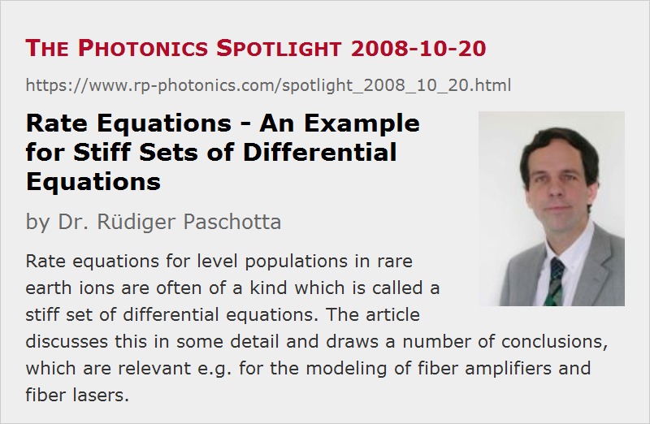

Rate Equations – An Example for Stiff Sets of Differential Equations
Posted on 2008-10-20 as a part of the Photonics Spotlight (available as e-mail newsletter!)
Permanent link: https://www.rp-photonics.com/spotlight_2008_10_20.html
Author: Dr. Rüdiger Paschotta, RP Photonics Consulting GmbH
Abstract: Rate equations for level populations in rare earth ions are often of a kind which is called a stiff set of differential equations. The article discusses this in some detail and draws a number of conclusions, which are relevant e.g. for the modeling of fiber amplifiers and fiber lasers.

Ref.: encyclopedia articles on rate equation modeling

The temporal evolution of the populations of electronic levels in some laser gain medium (containing e.g. rare earth ions) can be calculated with rate equations. These are systems of ordinary differential equations, with coupling terms resulting from processes like spontaneous emission, non-radiative transitions, stimulated emission and energy transfers. In principle, it is simple to numerically calculate the temporal evolution even for relatively complicated rate equation systems. This can also be used for approximately calculating the steady-state population values for given optical intensities e.g. of a pump wave and a signal wave.
However, there is a frequently encountered problem: in many situations of interest, the rate equations represent a so-called “stiff” set of differential equations. This happens when the transitions between different levels are caused by physical processes which operate on very different time scales. For example, consider the level system of erbium (as used in erbium-doped fiber amplifiers), which is shown in Figure 1. As explained in the encyclopedia article on rate equation modeling, the rate equations for a situation with some given pump and signal intensities read as follows:

The simulated temporal evolution for some set of parameters is shown in Figure 2.
It is an essential detail that the coefficient A32, describing non-radiative multi-phonon transitions from the pump level to the upper laser level, is usually much larger than the other coefficients, including the terms with the pumping rates. For that reason, ions pumped into level 3 will very quickly be transferred into level 2, so that the population of level 3 itself remains very small.
The curves shown look very smooth, so that one may expect it to be very easy and efficient to integrate the rate equations numerically with a step size of say 50 μs. If you try that, however, you will find that numerical results are absolutely wrong, wildly oscillating with quickly increasing amplitude. Good results are obtained only once you reduce the temporal step size to the order of 1/A32, which is 1 μs in this example. With the Euler method, where one step simply means to add the temporal derivatives times the temporal step size to the current populations, the instability starts for step sizes just above 2 μs. With the more refined Runge–Kutta algorithm, you can go only slightly further to a step size of about 3.7 μs. Of course, that behavior would be even far worse if A32 were substantially larger.
The observed behavior can be understood by first considering a simple exponential decay (with a single time constant). It is easy to see that the Euler method will deliver oscillating results when the temporal step size is larger than the time constant of the system, and it will even be unstable when the step size is at least twice the time constant. Figure 2 illustrates this: the lowest curve is for a step size of half the time constant (resulting in moderate errors), and the higher curves are for integer multiples of half the time constant.

Now this problem doesn't go away if the system is more complex and has some slower processes in addition. Even when the exact value of the fast time constant of the system has nearly no effect on the longer-term evolution of the system, the corresponding process makes the numerical solution unstable when the step size is too large.
Examining the concrete rate equation system (see above) can also be instructive. When we start with all erbium ions being in the ground state (level 1), a first Euler step will pump some population from level 1 to 3. The calculated population of level 3 is then too high, as the decay from level 3 to 2 is not yet considered. In the next step, there will be a strong transfer from level 3 to 2, and if the step size is larger than twice the corresponding time constant, the population of level 3 will “overshoot” and get substantially negative (which is physically unreasonable, of course). In the third step, we obtain a transfer in the opposite direction, making the deviation from the correct solution even larger.
We can learn several things:
- Examining the problem in the context of a well understood physical system, we can obtain a very good understanding of the numerical problem. We clearly see then that a more advanced propagation algorithm, such as the Runge–Kutta or the Bulirsch–Stoer method, does not solve the problem.
- In many situations, we can remove the problem by adiabatically eliminating some variables. In our example, we could approximate the fast transition from level 3 to 2 as being infinitely fast, thus assuming that the pumping from level 1 directly leads into level 2.
- If we cannot use that approximation, we see that it is no good idea to calculate the steady-state populations simply by simulating the temporal evolution. If we need an efficient calculation of the steady state, this is better done as multidimensional root finding (setting the temporal derivatives to zero). The multidimensional Newton–Raphson method is probably most suitable. Note that the derivatives with respect to population values, as needed there, can be quite easily computed for the typical kinds of rate equations.
I actually got inspired to write about this by my work on the substantially extended version 2 of the software RP Fiber Power, which calculates the optical powers in fiber amplifiers and fiber lasers. While the previous version could be used only for simple laser-active ions with only a single metastable level, the new version allows the user to define complicated level systems process by process, including energy transfers even between different types of ions (such as Er3+ and Yb3+). This software (which is basically finished and currently undergoes intensive testing) must efficiently calculate the steady-state populations for arbitrary cases, including those where the rate equations are extremely stiff, and also possibly nonlinear. Therefore, I had to implement the multidimensional Newton–Raphson method, as mentioned above.
This article is a posting of the Photonics Spotlight, authored by Dr. Rüdiger Paschotta. You may link to this page and cite it, because its location is permanent. See also the RP Photonics Encyclopedia.
Note that you can also receive the articles in the form of a newsletter or with an RSS feed.
Questions and Comments from Users
Here you can submit questions and comments. As far as they get accepted by the author, they will appear above this paragraph together with the author’s answer. The author will decide on acceptance based on certain criteria. Essentially, the issue must be of sufficiently broad interest.
Please do not enter personal data here; we would otherwise delete it soon. (See also our privacy declaration.) If you wish to receive personal feedback or consultancy from the author, please contact him e.g. via e-mail.
By submitting the information, you give your consent to the potential publication of your inputs on our website according to our rules. (If you later retract your consent, we will delete those inputs.) As your inputs are first reviewed by the author, they may be published with some delay.
|  |
If you like this page, please share the link with your friends and colleagues, e.g. via social media:
These sharing buttons are implemented in a privacy-friendly way!